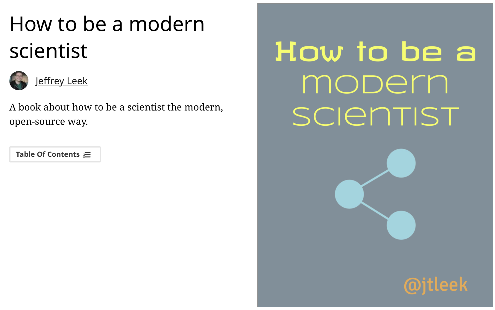
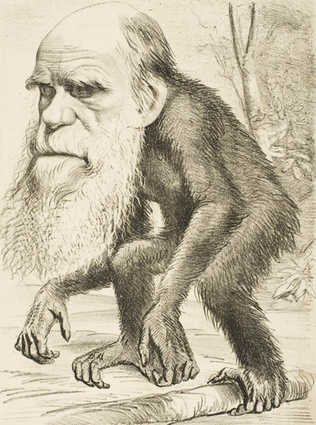
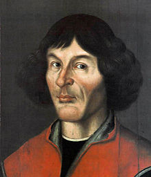
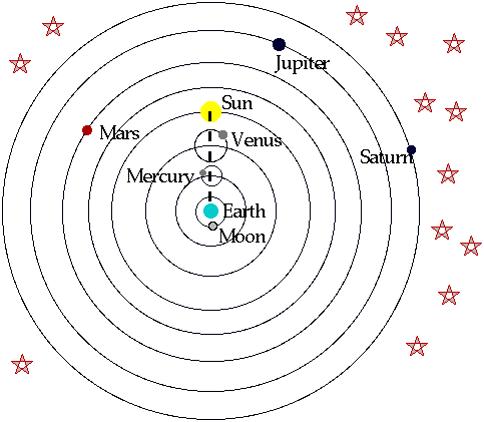

Metodologia Badań Psychologicznych
Krzysztof Basiński
Podstawowe informacje
Kontakt
Krzysztof Basiński
Zakład Badań nad Jakością Życia
Katedra Psychologii
ul. Tuwima 15, pokój 312
Kontakt
krzysztof.basinski@gumed.edu.pl
kbas.gumed.edu.pl
kbas.gumed.edu.pl/mbp
Podręczniki
Podręczniki
Podręczniki

Podręczniki

Źródła on-line
- Introduction to psychology – Charles Stangor (Google: „stangor introduction psychology pdf”)
- en.wikipedia.org (!)
Zaliczenie
- Egzamin (najpewniej termin “0” w pierwszym/drugim tyg. semestru letniego)
- 70% pytań testowych, 30% otwartych
- Ocena = 0.5 * egzamin + 0.25 * ćwiczenia w zimie + 0.25 * ćwiczenia w lecie
Psychologia jako nauka empiryczna
Psychologia jako nauka empiryczna
Empiria - doświadczenie, poznanie za pośrednictwem zmysłów (SJP)
Psychologia jako nauka empiryczna
- Psycholog polega na badaniach empirycznych w wyciąganiu wniosków nt. zachowania ludzi
- Badania empiryczne oparte są na danych zbieranych i analizowanych w systematyczny sposób
- Zasady regulujące w jaki sposób naukowcy zbierają i analizują dane zbiorczo nazywane są metodą naukową
Prawa i teorie
- Twierdzenia ogólne, stosowane do wszystkich sytuacji w danej dziedzinie, to prawa
- W fizyce np.:
- Zasady dynamiki Newtona
- Prawo powszechnego ciążenia
- Ogólna i szczególna teoria względności
- W psychologii:
- Prawo Webera-Fechnera
- Prawo Yerksa-Dodsona
- Prawo efektu (Thorndike)
Prawa i teorie
- Teoria naukowa – zestaw reguł, które wyjaśniają i pozwalają przewidywać wiele (lecz nie wszystkie) zjawiska w jakiejś dziedzinie
- W psychologii np.:
- Teoria społecznego uczenia się
- Teoria rozwoju poznawczego Piageta
- Teoria przeniesienia pobudzenia emocjonalnego
- Teoria salutogenetyczna Antonovskiego
- …i SETKI innych mniejszych/większych teorii
Warunki dobrej teorii naukowej (za Stangorem ale nie tylko)
Dobra teoria naukowa powinna:
- Być ogólna
- Być oszczędna
- Stymulować dalsze badania
- Być falsyfikowalna
Falsyfikacjonizm
- Karl Popper, Austria/UK, I poł. XXw.
- Teoria jest naukowa wtedy, gdy istnieje hipotetyczna możliwość dowiedzenia jej nieprawdziwości
- Np. teoria „wszystkie łabędzie są białe” jest falsyfikowalna.
Teorie falsyfikowalne
Teorie falsyfikowalne

Teorie falsyfikowalne

Teorie falsyfikowalne

Teorie problematyczne

Teorie problematyczne

Teorie problematyczne

Praca naukowa jako weryfikowanie hipotez
- Empirycznej weryfikacji teorii dokonuje się poprzez weryfikowanie hipotez wysnutych na jej podstawie
- Hipoteza – proponowane wyjaśnienie jakiegoś zjawiska, sformułowane na podstawie teorii naukowej i testowalne przy pomocy badań empirycznych
Praca naukowa jako weryfikowanie hipotez
- Hipoteza najczęściej postuluje jakiś związek pomiędzy zmiennymi
- Jeśli hipotezy wysnute z teorii potwierdzane są w badaniach, to teoria jest dobrą teorią naukową…
- …ale…
Nauka z perspektywy kurczaków czyli problem indukcji
- Kurczak co rano obserwuje jak hodowca przychodzi i wydaje jedzenie
- Na mocy indukcji kurczak stwierdza, iż prawdziwe jest zdanie „hodowca każdego dnia przychodzi wydać jedzenie”
- Problem – pewnego dnia hodowca przychodzi i ukręca łeb kurczakowi
Nauka z perspektywy kurczaków czyli problem indukcji
- Inne przykłady:
- Każdego dnia wschodzi słońce
- Jeśli ktoś umiera, to nigdy nie jestem to ja.
- Czy można orzec o prawdziwości teorii na podstawie danych empirycznych, które ją potwierdzają?
Inny sposób na poradzenie sobie z problemem indukcji
- To co otrzymujemy na drodze indukcji to nie dowód na prawdziwość teorii tylko jej uprawdopodobnienie
- Teorie naukowe w kategoriach probabilistycznych
- Problem filozoficzny (D.Hume) – nie ma logicznego uzasadnienia dla przewidywania przyszłości tylko na podstawie wydarzeń z przeszłości
Jeszcze inny sposób
- Nauka składa się z tzw. rozumowań abdukcyjnych
- Podział rozumowań:
- Dedukcyjne – wnioskowanie o konkluzjach na podstawie logicznych przesłanek
- Prawo sylogizmu - jeśli A->B i B->C to A->C
- np.: Wszyscy ludzie są śmiertelni. Elvis Presley jest człowiekiem. Elvis Presley jest śmiertelny.
- Indukcyjne
- Abdukcyjne – obserwujemy zjawisko i poszukujemy jego wyjaśnienia (rozumowanie post hoc)
- Dedukcyjne – wnioskowanie o konkluzjach na podstawie logicznych przesłanek
Rozumowania abdukcyjne
- W trakcie gry w bilard obserwujemy poruszającą się czarną bilę
- Możemy założyć, że porusza się ona, ponieważ została uderzona przez białą bilę. Nie jest to zawsze prawdziwe założenie, ale pozwala nam orientować się w danym zjawisku
- Naukowcy formułują jedynie prawdopodobne hipotezy na temat świata
- Hipotez może być wiele – problem brzytwy Ockhama
Brzytwa Ockhama
- Spośród konkurencyjnych hipotez, wybrana powinna być ta z najmniejszą ilością założeń
- Przykład: w czasach Kopernika obserwacje ciał niebieskich można było wytłumaczyć zarówno modelem helio-, jak i geocentrycznym. Model geocentryczny wymagał jednak bardzo wielu założeń a heliocentryczny tylko siedmiu
- Często Brzytwa jest nadinterpretowana – „najprostsze wyjaśnienie jest najlepsze” (!)
- A.Einstein: „wszystko powinno być opisane tak prosto jak to tylko możliwe… ale nie prościej!”
Rozwój nauki - paradygmaty (Thomas Kuhn)
- Thomas Samuel Kuhn (1922-1996), amerykański fizyk, historyk, filozof nauki, autor książki The Structure of Scientific Revolutions (1962)
- Wcześniej sądzono, że rozwój nauki przebiega poprzez akumulację wiedzy
- Kuhn dowodzi, że w nauce dochodzi do rewolucji, zwanych zmianami paradygmatów (paradigm shift)
Paradygmaty
Paradygmat to ogólnie uznawany (w danym momencie) model problemów i rozwiązań, który dla grupy naukowców definiuje:
- Co powinno być badane
- Jakiego rodzaju pytania mogą być zadawane
- Jaka jest struktura takich pytań
- Jaka jest podstawowa teoria w danej dziedzinie
- Jak należy interpretować wyniki
- W jaki sposób i jakimi metodami przeprowadzać badania
Zmiany paradygmatów w historii
- Przewrót kopernikański
- Principia Mathematica Newtona i rozwój fizyki
- Szczególna i ogólna teoria względności Einsteina
- Rozwój mechaniki kwantowej
- Mniejsze (?) zmiany na naszych oczach:
- Opisanie genomu ludzkiego
- fMRI i inne techniki neuroobrazowania – rozwój tzw. cognitive neuroscience
- Odkrycie fal grawitacyjnych
- CRISPR Cas9
Problem związku obserwacji z teorią - ile gwiazd na obrazku?
Związek obserwacji z terorią
- Gwiazd na obrazku widać 5. Jednak wg. teorii względności Einsteina są to de facto tylko dwa obiekty!
- Nawet w obrębie jednej dziedziny nauki obserwacje mogą się różnić w zależności od przyjętego modelu teoretycznego. Np. obserwacja zachowania w psychologii:
Związek obserwacji z terorią
- w kontekście procesów warunkowania – behawioryzm
- w kontekście przekonań, myśli i sądów jednostki – psychologia poznawcza
- w kontekście wpływu społecznego – psychologia społeczna
- w kontekście nieświadomych popędów i mechanizmów obronnych - psychoanaliza
Wartości w nauce
- Nie ma zgody odnośnie celów, jakie powinny spełniać badania naukowe
- Czy nauka powinna skupić się na poznaniu prawdy absolutnej, czy też są rzeczy, których nauka nie może poznać?
Wartości w nauce
- Realizm naukowy – nauka pokazuje prawdę, teorie naukowe są albo prawdziwe, albo częściowo prawdziwe albo błędne
- Antyrealizm – nauka nie pokazuje prawdy, zwłaszcza o rzeczach trudno obserwowalnych (problemy mechaniki kwantowej)
- Instrumentalizm naukowy – nauka nie powinna się skupiać na poznaniu prawdy, tylko na użytecznych teoriach, które pozwalają przewidywać przyszłość i prowadzą do postępu technologicznego
Nauka vs. pseudonauka
- Niektórzy ludzie propagują treści, które na pierwszy rzut oka wydają się być naukowe, ale takie nie są
- Nie są, bo np. nie spełniają warunku falsyfikowalności albo którejś z cech nauki
- Jest wiele pseudonaukowych teorii ocierających się o psychologię:
- ESP
- Biorytmy
- Astrologia
- Numerologia
- Terapie pseudonaukowe
Długa lista dziwacznych terapii psychologicznych (za Singer i Lalich, Crazy Therapies, 1996)
- Leonard Orr opracował teorię oddychania energią. Według niego, jeśli nauczysz się oddychać właściwie, możesz wydechnąć (breathe away) choroby i ból.
- Marguerite Sechehaye i John Rosen praktykują terapię regresji i “reparentingu”. Terapeuta staje się zastępczym rodzicem pacjenta, aby naprawić szkody które wyrządzili jego prawdziwi rodzice.
Długa lista dziwacznych terapii psychologicznych
- Jacqui Shiff uważa, że pacjent musi chodzić w pieluchach, ssać kciuka i pić z butelki aby wyzdrowieć.
- Sondra Ray i Bob Mandel uważają, że twoje problemy wynikają ze sposobu, w jaki się urodziłeś. Pomogą ci “urodzić się na nowo”, tym razem właściwie.
Długa lista dziwacznych terapii psychologicznych
- John Fuller, Bruce Goldberg, Brian Weiss, Edith Fiore, Richard Boylan, David Jacobs, Budd Hopkins i John Mack używają hipnozy, aby odkryć dawne (lub przyszłe!) przypadki w życiu pacjenta, w których został porwany przez kosmitów. Ma to pomóc…
- John Bradshaw uważa, że każdy ma swoje wewnętrzne dziecko, dla którego musi być dobry aby pozostać w zdrowiu psychicznym
www.skepdic.com

Z naszego podwórka - Bałtycki Instytut Psychologii

Nauka a zdrowy rozsądek
- Czy koniecznie musimy podchodzić do psychologii naukowo?
- Czy nie wystarczy zdrowy rozsądek?
- Przykłady zdroworozsądkowych teorii psychologicznych:
- Człowiek jest mniej agresywny jeśli się “wyładuje”
- Ludzie nie przyznają się do przestępstwa, którego nie popełnili (chyba że na skutek tortur)
- Przeciwieństwa się przyciągają
- Niektórzy ludzie są “humanistami”, inni zaś to “umysły ścisłe”
Dlaczego zdrowy rozsądek zawodzi?
- Brak sceptycyzmu naukowego
- Jeśli wiele osób (w tym ekspertów) podziela jakiś pogląd, ten pogląd na pewno jest prawdziwy (confirmation bias)
- Brak tolerancji dla niewiedzy (nie wiemy jak działa paracetamol!)
Mity w psychologii (z którymi musicie walczyć!)
- Ludzie używają tylko 10% swojego mózgu
- Niektórzy ludzie są lewo-półkulowi a inni prawo
- Przekazy podprogowe mogą zmusić człowieka do kupna produktu
- Hipnoza pozwala przypomnieć sobie zapomniane wspomnienia
- Wrzody żołądka spowodowane są przede wszystkim stresem
- Najlepszym źródłem wiedzy o leczeniu zaburzeń psychicznych jest doświadczenie klinicysty
Nauka a praca kliniczna
- Zaburzenia psychiczne są częścią świata empirycznego, dlatego można je badać empirycznie
- Skuteczność terapii psychologicznych również można badać empirycznie (w paradygmacie badań klinicznych)
- Środowisko jest podzielone odnośnie roli nauki w terapii psychologicznej